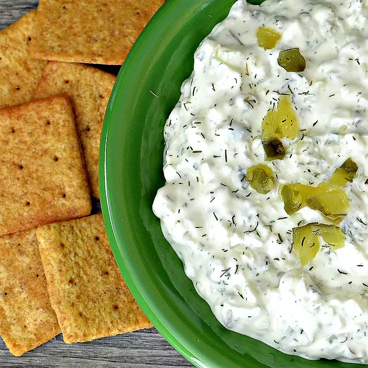

Dill Pickle Dip

Description
If you are looking for a tasty dip for superbowl sunday, well you have come to the right place.
Dill pickles are always nice to have while watching the game, what better way to have the full game experience than a dill pickled flavored dip!
Ingredients
- 1 (8 ounce) package cream cheese, at room temperature
- 1 cup chopped dill pickles, or more to taste
- ¼ cup finely chopped sweet onion
- 2 tablespoons pickle juice, or more to taste
- 1 teaspoon dried dill weed
- ½ teaspoon kosher salt
- 1 pinch freshly ground black pepper, or to taste
Directions
Step 1
- Stir cream cheese in a bowl with a wooden spoon until smooth. Stir in dill pickles, onion, pickle juice, dill weed, salt, and pepper until evenly distributed. Refrigerate before serving, at least 1 hour.